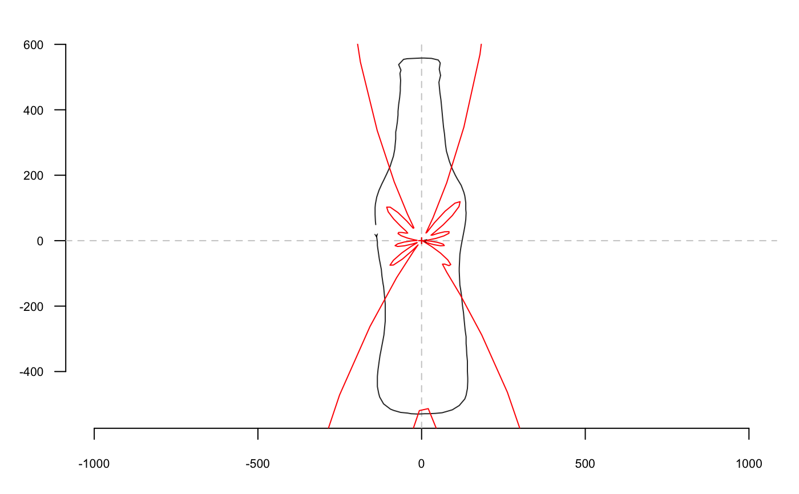

rfourier_i uses the inverse radii variation (equally spaced radii) transformation to
calculate a shape, when given a list with Fourier coefficients, typically
obtained computed with rfourier.
rfourier_i(rf, nb.h, nb.pts = 120)
| rf | A |
|---|---|
| nb.h |
|
| nb.pts |
|
A list with components:
vector of
x-coordinates.
vector of y-coordinates.
vector of angles used.
vector of radii
calculated.
See the JSS paper for the maths behind.
Directly borrowed for Claude (2008), and called ifourier1 there.
Claude, J. (2008) Morphometrics with R, Use R! series, Springer 316 pp.
Other rfourier:
rfourier_shape(),
rfourier()
data(bot) coo <- coo_center(bot[1]) # centering is almost mandatory for rfourier family coo_plot(coo)#> $an #> [1] 1.041357e-14 -4.745309e+02 8.327818e-01 2.719483e+02 -1.430955e+01 #> [6] -1.110619e+02 2.489911e+01 -1.011701e+00 -1.771458e+01 5.542552e+01 #> [11] 6.786737e-01 -5.902187e+01 #> #> $bn #> [1] 9.497073e-14 -1.108663e+01 -5.032796e+01 1.187178e+01 1.332257e+02 #> [6] 4.068663e+00 -1.709325e+02 -1.013725e+01 1.391797e+02 1.085760e+01 #> [11] -7.449979e+01 -2.355442e+00 #> #> $ao #> [1] 669.1267 #> #> $r #> [1] 139.1167 135.1134 135.8741 136.8427 141.0323 143.5802 151.2095 162.8116 #> [9] 175.5101 182.5204 198.0176 214.4721 223.4262 241.8735 260.7074 269.7883 #> [17] 289.8301 310.0117 320.9760 342.0111 363.0862 373.1664 393.9569 415.7375 #> [25] 436.2997 445.8192 465.8759 484.9159 494.7304 512.1917 523.5711 525.7951 #> [33] 528.7641 528.6261 529.8403 529.9849 528.9630 529.2840 529.5332 529.6230 #> [41] 526.6029 525.3373 516.8135 501.5361 492.0222 473.0432 453.3357 442.8940 #> [49] 422.7064 402.9506 393.5883 373.2914 353.4743 342.9622 323.7894 303.5315 #> [57] 283.8734 274.5648 254.3851 234.8608 225.9056 207.4851 188.9917 179.2651 #> [65] 163.2102 148.4020 142.2876 131.8906 124.2115 121.7441 122.3408 126.4329 #> [73] 133.8555 138.8126 149.4057 160.3977 165.1035 178.0327 190.2983 196.3891 #> [81] 207.9233 218.2629 225.0539 239.8685 256.5975 274.7171 283.4915 303.0400 #> [89] 323.0170 333.5460 353.5262 373.8148 383.4986 404.8965 425.3750 435.1409 #> [97] 455.5781 476.1955 487.0166 508.4428 526.8989 546.1072 554.4755 557.9344 #> [105] 558.1869 558.1342 557.6074 557.8729 556.8590 542.6716 524.9317 515.3814 #> [113] 494.2988 473.6200 462.7267 442.2440 421.9866 401.6471 390.8306 370.6053 #> [121] 350.7010 341.4100 321.0176 301.2409 290.9421 272.0980 254.7364 246.6077 #> [129] 230.9259 217.6545 212.0765 201.6712 191.0722 180.1960 174.3784 163.0992 #> [137] 152.9502 148.4252 #>